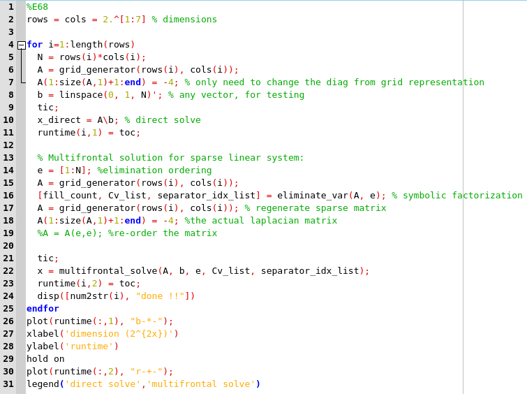
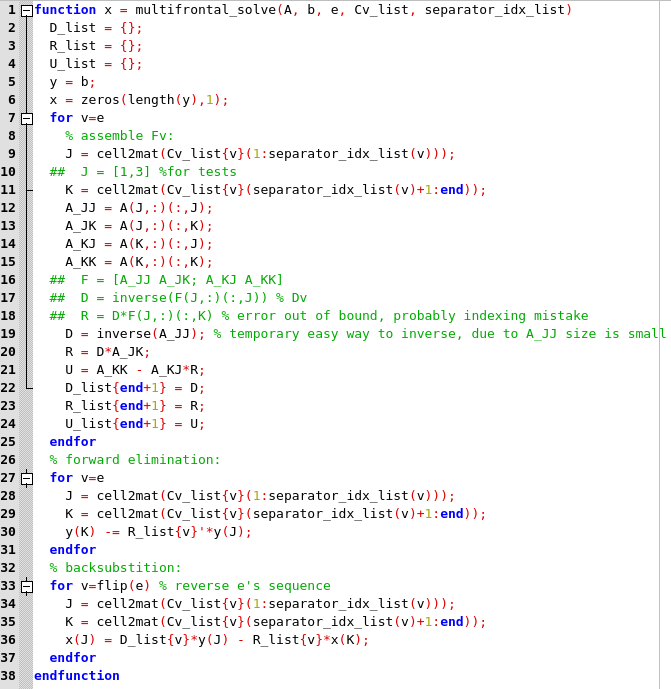
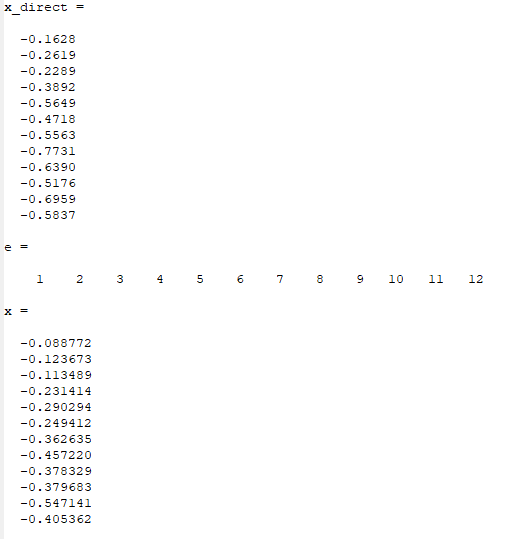

-
E68:
-
Main caller and multifrontal linear system solver on 5-point discretizations Laplacian, mostly the functions are written in the previous exercise (elimination ordering, Cv, and fills):


Source Code
-
Output of x_direct from A\b, and x from the multifrontal algorithm using the Cv from the elimination ordering:
